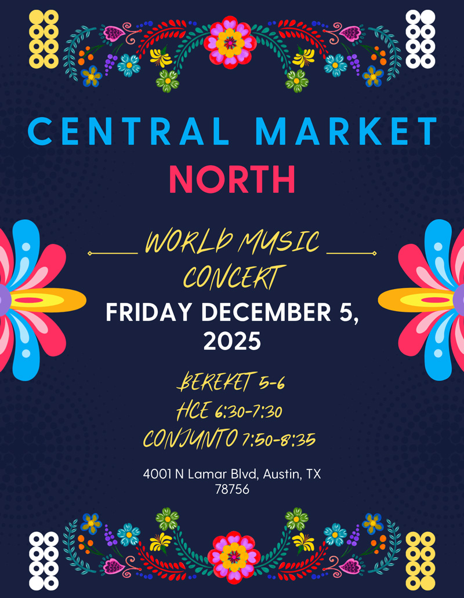

<!-- Wrapper Table -->
<table role="presentation" cellspacing="0" cellpadding="0" border="0" width="100%" style="background-color: #f4f4f4;">
    <tr>
        <td align="center">

            <!-- Main Container -->
            <table role="presentation" cellspacing="0" cellpadding="0" border="0" width="600"
                style="max-width: 600px; width: 100%; background-color: #f4f4f4;">

                <!-- Header Section - Black with Logo -->
                <tr>
                    <td style="padding: 0 0 20px 0;">
                        <table role="presentation" cellspacing="0" cellpadding="0" border="0" width="100%"
                            style="background-color: #000000; border-radius: 15px;">
                            <tr>
                                <td style="padding: 40px 30px; text-align: center;">

                                    <br>


                                    <br><br>


                                    <h2
                                        style="color:#ffe94f;font-family:'Poppins',Arial,sans-serif;font-size:26px;font-weight:700;margin:0 0 8px 0;text-align:center;">
                                        XO Insider
                                    </h2>
                                    <p
                                        style="color:#ffffff;font-family:'Poppins',Arial,sans-serif;font-size:18px;line-height:1.4;margin:0;text-align:center;">
                                        Powered by Prosper XO: A platform and movement<br>
                                        for artist equity, transparency, and ownership.
                                    </p>

                                    <!-- featured image -->

                                        <div style="border-radius: 15px;margin: 0 auto; width:100%;"><a
                                                href="https://luma.com/gavwreg2?tk=xbnAbe" target="_blank"></a>
                                        </div>
                                        <!-- Event Title -->
                                        <h2
                                            style="color: #ffffff; font-family: 'Poppins', Arial, sans-serif; font-size: 20px; font-weight: 900; line-height: 1.3; margin: 0 0 20px 0; text-align: center; text-transform: uppercase;">
                                            World Music Concert at Central Market North
                                        </h2>

                                        <!-- We'll Explore Section -->
                                        <div style="text-align: left; max-width: 500px; margin: 0 auto 25px auto;">
                                            <p>
                                               copy placeholder
                                            </p>

                                        </div>

                                        <!-- RSVP Button -->

                                        <table role="presentation" cellspacing="0" cellpadding="0" border="0"
                                            style="margin: 30px auto 0 auto;">
                                            <tr>
                                                <td style="text-align: center;">
                                                    <a href="https://luma.com/gavwreg2?tk=xbnAbe"
                                                        style="display: inline-block; background-color: #ff4500; color: #ffffff; font-family: 'Poppins', Arial, sans-serif; font-size: 16px; font-weight: 700; text-decoration: none; text-transform: uppercase; padding: 15px 40px; border-radius: 25px;">
                                                        RSVP Now
                                                    </a>
                                                </td>
                                            </tr>
                                        </table>

                                </td>
                            </tr>
                        </table>
                    </td>
                </tr>

                <!-- Second Section - Orange -->
                <tr>
                    <td style="padding: 0 0 20px 0;">
                        <table role="presentation" cellspacing="0" cellpadding="0" border="0" width="100%"
                            style="background-color: #F2943C; border-radius: 15px;">
                            <tr>
                                <td style="padding: 40px 30px; text-align: center;">

                                    <div style="border-radius: 15px;margin: 0 auto; width:100%;"><a
                                            href="https://prosperxo.com/next-event/?utm_source=mailchimp&utm_medium=email&utm_campaign=newsletter251020"
                                            target="_blank"></a>
                                    </div>
                                    <!-- Event Title -->
                                    <h2
                                        style="color: #ffffff; font-family: 'Poppins', Arial, sans-serif; font-size: 20px; font-weight: 900; line-height: 1.3; margin: 0 0 20px 0; text-align: center; text-transform: uppercase;">
                                        Women Who Create: From Festival to Frequency
                                    </h2>

                                    <!-- We'll Explore Section -->
                                    <div style="text-align: left; max-width: 500px; margin: 0 auto 25px auto;">
                                        <p
                                            style="color: #ffffff; font-family: 'Poppins', Arial, sans-serif; font-size: 16px; font-weight: 600; margin: 0 0 15px 0; text-align: center;">
                                            Why Attend?
                                        </p>
                                        <p
                                            style="color: #ffffff; font-family: 'Poppins', Arial, sans-serif; font-size: 16px; font-weight: 300; margin: 0 0 15px 0; text-align: center;">

                                            ​This month’s Town Hall celebrates the power of women creators shaping
                                            culture, from festival stages to studio frequencies. Join us for an intimate
                                            conversation with two powerhouse voices in Austin’s creative community as
                                            they share their stories, challenges, and visions for the future of music
                                            and culture.

                                        </p>
                                    </div>

                                    <div style="text-align: left; max-width: 500px; margin: 0 auto 25px auto;">
                                        <p
                                            style="color: #ffffff; font-family: 'Poppins', Arial, sans-serif; font-size: 16px; font-weight: 600; margin: 0 0 15px 0; text-align: center;">
                                            What to Expect</p>
                                        <p
                                            style="color: #ffffff; font-family: 'Poppins', Arial, sans-serif; font-size: 16px; font-weight: 300; margin: 0 0 15px 0; text-align: center;">
                                            • Inspiring conversations with women leaders<br>
                                            • Networking with artists, fans, and changemakers<br>
                                            • Food + drinks powered by community<br>
                                            • Prosper XO updates and opportunities to get involved<br><br>

                                            This event is <span style="font-weight: 600;">free and open to the
                                                public.</span><br>
                                            Because when artists prosper, culture thrives.
                                        </p>

                                        <p
                                            style="color: #ffffff; font-family: 'Poppins', Arial, sans-serif; font-size: 16px; font-weight: 600; margin: 0 0 15px 0; text-align: center;">
                                            Featuring Guest Speakers</p>

                                        <p
                                            style="color: #ffffff; font-family: 'Poppins', Arial, sans-serif; font-size: 16px; font-weight: 300; margin: 0 0 15px 0; text-align: center;">
                                            <span style="font-weight: 600;">Anna Madewell</span> – Founder of EmpowHER
                                            Festival, Artist & Film Producer, EDM Prosperity Network
                                        </p>

                                        <p
                                            style="color: #ffffff; font-family: 'Poppins', Arial, sans-serif; font-size: 16px; font-weight: 300; margin: 0 0 15px 0; text-align: center;">
                                            <span style="font-weight: 600;">Saratonin</span> – Electronic Music
                                            Producer, DJ, EDM Prosperity Network
                                        </p>

                                        <p
                                            style="color: #ffffff; font-family: 'Poppins', Arial, sans-serif; font-size: 16px; font-weight: 600; margin: 0 0 15px 0; text-align: center;">
                                            Hosted by Lauren Bruno & Monica Sanchez
                                        </p>
                                    </div>

                                    <!-- Event Details -->
                                    <div style="margin: 25px 0;">
                                        <p
                                            style="color: #ffe94f; font-family: 'Poppins', Arial, sans-serif; font-size: 16px; font-weight: 700; margin: 0 0 8px 0; text-align: center;">
                                            📅 Wednesday, November 5 · 6–8pm
                                        </p>
                                        <p
                                            style="color: #ffffff; font-family: 'Poppins', Arial, sans-serif; font-size: 14px; line-height: 1.5; margin: 0; text-align: center;">
                                            📍 ACL Room · Capital Factory (16th Floor)
                                        </p>
                                    </div>

                                    <!-- RSVP Button -->

                                    <table role="presentation" cellspacing="0" cellpadding="0" border="0"
                                        style="margin: 30px auto 0 auto;">
                                        <tr>
                                            <td style="text-align: center;">
                                                <a href="https://prosperxo.com/next-event/?utm_source=mailchimp&utm_medium=email&utm_campaign=newsletter251020"
                                                    style="display: inline-block; background-color: #ff4500; color: #ffffff; font-family: 'Poppins', Arial, sans-serif; font-size: 16px; font-weight: 700; text-decoration: none; text-transform: uppercase; padding: 15px 40px; border-radius: 25px;">
                                                    RSVP Now
                                                </a>
                                            </td>
                                        </tr>
                                    </table>
                                    <p
                                        style="color: #ffffff; font-family: 'Poppins', Arial, sans-serif; font-size: 16px; font-weight: 300; margin: 25px 0 15px 0; text-align: center;">
                                        At Prosper XO, we host monthly Town Halls on the second Wednesday of every month
                                        in Austin Texas, a space for artists, fans, brands, and community leaders to
                                        come together.</p>


                                    <p
                                        style="color: #ffffff; font-family: 'Poppins', Arial, sans-serif; font-size: 16px; font-weight: 300; margin: 0 0 15px 0; text-align: center;">
                                        Education, listening, resource-sharing, and in-person connection are at the
                                        heart of what we do. These gatherings are about more than conversation; they’re
                                        about building a future where artists prosper and culture thrives.</p>


                                    <p
                                        style="color: #ffffff; font-family: 'Poppins', Arial, sans-serif; font-size: 16px; font-weight: 300; margin: 0 0 0 0; text-align: center;">
                                        🌈 Can’t make it in person? No worries we live stream every Town Hall so you can
                                        still join the movement, wherever you are. And check out our YouTube channel for
                                        previous Townhall interviews.</p>

                                </td>
                            </tr>
                        </table>
                    </td>
                </tr>


                <!-- Resource Section - Purple/Blue -->
                <tr>
                    <td style="padding: 0 0 20px 0;">
                        <table role="presentation" cellspacing="0" cellpadding="0" border="0" width="100%"
                            style="background: linear-gradient(135deg, #8b5cf6 0%, #4169e1 100%); border-radius: 15px;">
                            <tr>
                                <td style="padding: 40px 30px; text-align: center;">

                                    <!-- HOME Logo Container -->
                                    <div style="border-radius: 15px; margin: 0 auto; width: 100%;">
                                        <a href="https://www.homeaustin.org/" target="_blank">
                                            
                                        </a>
                                    </div>


                                    <!-- Section Title -->
                                    <h2
                                        style="color: #ffffff; font-family: 'Poppins', Arial, sans-serif; font-size: 22px; font-weight: 900; line-height: 1.3; margin: 0 0 20px 0; text-align: center; text-transform: uppercase;">
                                        Resource of the Month: HOME
                                    </h2>

                                    <!-- Description -->
                                    <p
                                        style="color: #ffffff; font-family: 'Poppins', Arial, sans-serif; font-size: 16px; line-height: 1.5; margin: 0 0 20px 0; text-align: center;">
                                        HOME was founded by a group of women in Austin, Texas, determined to provide
                                        stability and
                                        support for the aging musicians who shaped our city’s legendary music scene. Too
                                        many of
                                        these artists spent their lives without a financial safety net, and as they age,
                                        the fall
                                        from the tightrope becomes increasingly perilous. HOME exists to catch them.</p>

                                    <p
                                        style="color: #ffffff; font-family: 'Poppins', Arial, sans-serif; font-size: 16px; line-height: 1.5; margin: 0 0 20px 0; text-align: center;">

                                        HOME’s very first effort focused on legendary blues and soul singer-songwriter
                                        THE Miss
                                        Lavelle White, who became our pilot program and honorary recipient. Miss Lavelle
                                        - who
                                        inspired generations on and off the stage and performed well into her 90s - was
                                        one of
                                        HOME’s first and most grateful beneficiaries. Her story is a reminder of why we
                                        exist: to
                                        provide a safety net for the musicians who have entertained, inspired, and
                                        mentored us for
                                        decades.
                                    </p>


                                    <!-- Learn More Button -->

                                    <a href="https://www.homeaustin.org/"
                                        style="display: inline-block; background-color: #ffe94f; color: #000000; font-family: 'Poppins', Arial, sans-serif; font-size: 16px; font-weight: 700; text-decoration: none; text-transform: uppercase; padding: 15px 40px; border-radius: 25px;">
                                        Learn More
                                    </a>
                                </td>
                            </tr>
                        </table>
                    </td>
                </tr>

                <!-- Feature of the Month - Red/Orange -->
                <tr>
                    <td style="padding: 0 0 20px 0;">
                        <table role="presentation" cellspacing="0" cellpadding="0" border="0" width="100%"
                            style="background-color: #ff4500; border-radius: 15px;">
                            <tr>
                                <td style="padding: 30px; text-align: center;">

                                    <!-- Article Image Placeholder -->
                                    <div style="border-radius: 15px;margin: 0 auto; width:100%;">
                                        
                                    </div><br><br>

                                    <!-- Section Title -->
                                    <h2
                                        style="color: #ffffff; font-family: 'Poppins', Arial, sans-serif; font-size: 24px; font-weight: 900; line-height: 1.2; margin: 0 0 15px 0; text-align: center; text-transform: uppercase;">
                                        FEATURE OF THE MONTH: Performance Rights Organizations (PROs)
                                    </h2>

                                    <!-- First Article Description -->
                                    <p
                                        style="color: #ffffff; font-family: 'Poppins', Arial, sans-serif; font-size: 16px; line-height: 1.5; margin: 0 0 25px 0; text-align: center;">

                                        Performance Rights Organizations (PROs) like ASCAP, BMI, and SESAC are essential
                                        for
                                        handling performance royalties, ensuring you get paid when your music is played
                                        publicly. In
                                        addition to performance royalties, artists also earn mechanical royalties from
                                        streaming,
                                        downloads, and physical sales, typically collected through agencies like The MLC
                                        (Mechanical
                                        Licensing Collective).
                                    </p>
                                    <p
                                        style="color: #ffffff; font-family: 'Poppins', Arial, sans-serif; font-size: 16px; line-height: 1.5; margin: 0 0 25px 0; text-align: center;">

                                        Tip: Register with a PRO and The MLC to make sure you’re not leaving money on
                                        the table.
                                    </p>
                                    <p
                                        style="color: #ffffff; font-family: 'Poppins', Arial, sans-serif; font-size: 16px; line-height: 1.5; margin: 0 0 25px 0; text-align: center;">

                                        If you don't have one, get in contact with a PRO to learn more today!
                                    </p>

                                </td>
                            </tr>
                        </table>
                    </td>
                </tr>

                <!-- Rotating Feature - Purple/Blue -->
                <tr>
                    <td style="padding: 0 0 20px 0;">
                        <table role="presentation" cellspacing="0" cellpadding="0" border="0" width="100%"
                            style="background: linear-gradient(135deg, #8b5cf6 0%, #4169e1 100%); border-radius: 15px;">
                            <tr>
                                <td style="padding: 40px 30px; text-align: center;">

                                    <h2
                                        style="color: #ffffff; font-family: 'Poppins', Arial, sans-serif; font-size: 24px; font-weight: 900; line-height: 1.2; margin: 0 0 20px 0; text-align: center; text-transform: uppercase;">
                                        Grant Opportunities for Austin Artists
                                    </h2>


                                    <!-- AACME -->

                                    <div style="border-radius: 15px; margin: 0 auto; width: 100%;">
                                        
                                    </div>

                                    <p
                                        style="color: #ffffff; font-family: 'Poppins', Arial, sans-serif; font-size: 16px; line-height: 1.6; margin: 20px 0; text-align: center;">
                                        <span style="font-weight: 600;">Austin Arts, Culture, Music and Entertainment
                                            (AACME)</span> offers grant funding to support Austin's artists, cultural
                                        groups, music, and heritage tourism. Whether you're just getting started or have
                                        decades of experience, AACME funding programs support and promote your work.
                                    </p>

                                    <p
                                        style="color: #ffffff; font-family: 'Poppins', Arial, sans-serif; font-size: 16px; line-height: 1.6; margin: 0 0 10px 0; text-align: left; max-width: 500px; margin-left: auto; margin-right: auto;">
                                        • <a href="https://www.austintexas.gov/sites/default/files/files/ACME/Funding/ACME-Funding-Program-Guidelines-FINAL-_-9-30-25.pdf"
                                            style="color: #ffe94f; font-weight: 600; text-decoration: none;">Fiscal Year
                                            2026 AACME Funding Guidelines (English, PDF)</a><br><br>
                                        • <a href="https://www.austintexas.gov/sites/default/files/files/ACME/Funding/ACME-Funding-Program-Guidelines-FINAL-_Spanish.pdf"
                                            style="color: #ffe94f; font-weight: 600; text-decoration: none;">Fiscal Year
                                            2026 AACME Funding Guidelines (Español, PDF)</a><br><br>
                                        • To learn more about requirements for all funding programs, visit the <a
                                            href="https://www.austintexas.gov/acme/grants-funding#funding-guidelines"
                                            style="color: #ffe94f; font-weight: 600; text-decoration: none;">Fiscal Year
                                            2026 AACME Funding Guidelines</a><br><br>
                                        • Applicants may now <a href="https://thelongcenter.submittable.com/submit"
                                            style="color: #ffe94f; font-weight: 600; text-decoration: none;">access the
                                            Intake and Eligibility Verification Forms</a>, the first steps in the
                                        application process
                                    </p>

                                    <!-- MOHA -->
                                    <!-- Image -->
                                    <div style="border-radius: 15px; margin: 0 auto; width: 100%;">
                                        
                                    </div>

                                    <p
                                        style="color: #ffffff; font-family: 'Poppins', Arial, sans-serif; font-size: 16px; line-height: 1.6; margin: 0 0 20px 0; text-align: center;">
                                        <span style="font-weight: 600;">Museum of Human Achievement (MoHA)</span> offers
                                        grant support through two key avenues:
                                    </p>

                                    <p
                                        style="color: #ffffff; font-family: 'Poppins', Arial, sans-serif; font-size: 16px; line-height: 1.6; margin: 0 0 10px 0; text-align: left; max-width: 500px; margin-left: auto; margin-right: auto;">
                                        • <span style="font-weight: 600;">Direct Grant Application Assistance:</span>
                                        Free hangouts to help you navigate the grant process<br><br>
                                        • <span style="font-weight: 600;">Fiscal Sponsorship Services:</span> MoHA hosts
                                        free workshops for individuals and groups applying for grants. They also provide
                                        a platform through <a href="https://opencollective.com/"
                                            style="color: #ffe94f; font-weight: 600; text-decoration: none;">Open
                                            Collective</a> for fiscally sponsored projects to manage their funds.
                                        Recipients also receive grants from various organizations and are supported
                                        themselves. <a
                                            href="https://moha.wiki/Fiscal_Sponsorship#:~:text=How%20Does%20it%20Work%20at,15%25%20of%20grant%20funds"
                                            style="color: #ffe94f; font-weight: 600; text-decoration: none;">Learn more
                                            about fiscal sponsorship</a>
                                    </p>


                                    <p
                                        style="color: #ffffff; font-family: 'Poppins', Arial, sans-serif; font-size: 16px; line-height: 1.6; margin: 20px 0 0 0; text-align: center; font-style: italic;">
                                        We're here to help you access the resources you need to thrive. Questions? Reach
                                        out to us or join our next Town Hall to learn more!
                                    </p>


                                </td>
                            </tr>
                        </table>
                    </td>
                </tr>


                <!-- Fuel for the Journey Section - Blue -->
                <tr>
                    <td style="padding: 0 0 20px 0;">
                        <table role="presentation" cellspacing="0" cellpadding="0" border="0" width="100%"
                            style="background-color: #4390da; border-radius: 15px;">
                            <tr>
                                <td style="padding: 40px 30px; text-align: center;">

                                    <!-- Section Title -->
                                    <h2
                                        style="color: #ffffff; font-family: 'Poppins', Arial, sans-serif; font-size: 24px; font-weight: 900; line-height: 1.2; margin: 0 0 25px 0; text-align: center; text-transform: uppercase; letter-spacing: 2px;">
                                        Fuel for the Journey
                                    </h2>
                                    <p
                                        style="color: #ffffff; font-family: 'Poppins', Arial, sans-serif; font-size: 18px; line-height: 1.5; margin: 0 0 10px 0; text-align: center; font-weight:600">
                                        MORE UPDATES
                                    </p>
                                    <p
                                        style="color: #ffffff; font-family: 'Poppins', Arial, sans-serif; font-size: 18px; line-height: 1.5; margin: 0 0 10px 0; text-align: center;">
                                        <a href="https://austinmusicpeople.podbean.com/e/18-prosper-xo-lauren-bruno-sue-zoch-gabe-phoenix-terrany-johnson/"
                                            style="color: #ffe94f; text-decoration: none; font-weight: 600;">A new
                                            podcast</a>
                                        featuring Prosper XO CEO Lauren Bruno, CPO Gabriel Phoenix, and advisors Terrany
                                        Johnson and
                                        Sue Koch is out now • Chec out <a
                                            href="https://www.instagram.com/p/DPnEGIVDRW-/"
                                            style="color: #ffe94f; text-decoration: none; font-weight: 600;">the
                                            responses</a> when we asked creatives about why they love music and their
                                        ride or die albums and artists at our last Town Hall
                                    </p>

                                    <!-- Artist Voices -->
                                    <p
                                        style="color: #ffffff; font-family: 'Poppins', Arial, sans-serif; font-size: 18px; line-height: 1.5; margin: 20px 0 10px 0; text-align: center; font-weight:600">
                                        ARTIST VOICES
                                    </p>
                                    <div style="border-radius: 15px; margin: 0 auto; width: 100%;">
                                        
                                    </div>

                                    <!-- Quote -->
                                    <p
                                        style="color: #ffffff; font-family: 'Poppins', Arial, sans-serif; font-size: 18px; line-height: 1.5; margin: 20px 0 10px 0; text-align: center; font-weight:600">
                                        INSPIRATIONAL QUOTE
                                    </p>
                                    <p
                                        style="color: #ffffff; font-family: 'Poppins', Arial, sans-serif; font-size: 18px; line-height: 1.5; margin: 0 0 10px 0; text-align: center; font-style: italic;">
                                        “If I should ever die, God forbid, let this be my epitaph:
                                        THE ONLY PROOF HE NEEDED
                                        FOR THE EXISTENCE OF GOD
                                        WAS MUSIC”
                                    </p>
                                    <p
                                        style="color: #ffffff; font-family: 'Poppins', Arial, sans-serif; font-size: 16px; line-height: 1.5; margin: 0 0 25px 0; text-align: center;">
                                        - Kurt Vonnegut
                                    </p>

                                    <!-- Message -->
                                    <p
                                        style="color: #ffffff; font-family: 'Poppins', Arial, sans-serif; font-size: 16px; line-height: 1.6; margin: 0 0 20px 0; text-align: center;">
                                        At Prosper XO, everything we do comes back to uplifting creators and making the
                                        industry
                                        more just. Thank you for being part of this journey with Prosper XO.
                                    </p>

                                    <p
                                        style="color: #ffffff; font-family: 'Poppins', Arial, sans-serif; font-size: 16px; line-height: 1.6; margin: 0; text-align: center;">
                                        Let's continue to inspire change, uplift each other, and remind the world that
                                        artists
                                        deserve nothing less than respect, ownership, and prosperity. When artists
                                        prosper, culture
                                        thrives – and we're building that future together. ❤️
                                    </p>
                                </td>
                            </tr>
                        </table>
                    </td>
                </tr>

                <!-- Footer Section - No Box -->
                <tr>
                    <td style="padding: 40px 20px; text-align: center;">

                        <!-- Follow Us Text -->
                        <h3
                            style="color: #000000; font-family: 'Poppins', Arial, sans-serif; font-size: 24px; font-weight: 900; margin: 0 0 30px 0; text-transform: uppercase; letter-spacing: 1px;">
                            Follow Us
                        </h3>

                        <!-- Social Icons -->
                        <table role="presentation" cellspacing="0" cellpadding="0" border="0"
                            style="margin: 0 auto 30px auto;">
                            <tr>
                                <td style="text-align: center;">
                                    <a href="https://fb.com/prosperxoxo" style="display: inline-block; margin: 0 15px;">
                                        
                                    </a>
                                    <a href="https://instagram.com/prosperxo"
                                        style="display: inline-block; margin: 0 15px;">
                                        

                                    </a>

                                    <a href="https://www.tiktok.com/@prosper_xo_"
                                        style="display: inline-block; margin: 0 15px;">
                                        

                                    </a>
                                    <a href="https://www.youtube.com/@prosperxo"
                                        style="display: inline-block; margin: 0 15px;">
                                        

                                    </a>

                                    <a href="https://www.linkedin.com/company/prosper-xo/"
                                        style="display: inline-block; margin: 0 15px;">
                                        
                                    </a>

                                    <a href="https://x.com/prosperxoxoxo"
                                        style="display: inline-block; margin: 0 15px;">
                                        
                                    </a>
                                </td>
                            </tr>
                        </table>

                        <!-- Closing Message -->
                        <p
                            style="color: #000000; font-family: 'Poppins', Arial, sans-serif; font-size: 14px; line-height: 1.5; margin: 0 0 30px 0; text-align: center;">
                            XO Insider is your monthly update from Prosper XO. Stay tuned for more spotlights, events,
                            and resources
                            in our next issue. Until then, keep creating and keep shining!
                        </p>

                        <!-- Legal Footer -->
                        <p
                            style="color: #666666; font-family: 'Poppins', Arial, sans-serif; font-size: 12px; line-height: 1.4; margin: 0 0 10px 0; text-align: center;">
                            <a href="{{view_in_browser_link}}" style="color: #4390da; ">View
                                email in
                                browser</a>
                        </p>

                    </td>
                </tr>

                <!-- close Main Container table -->

            </table>
        </td>
    </tr>
</table>